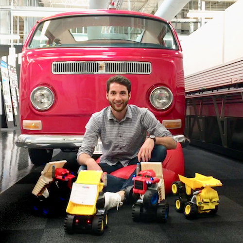
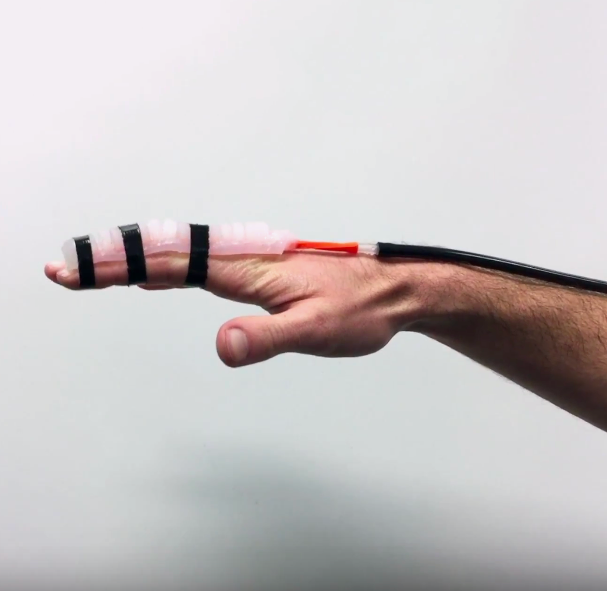
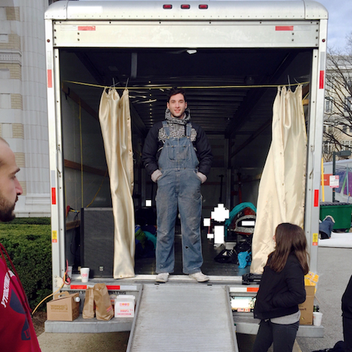
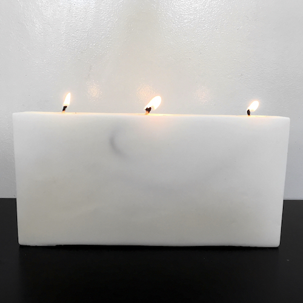
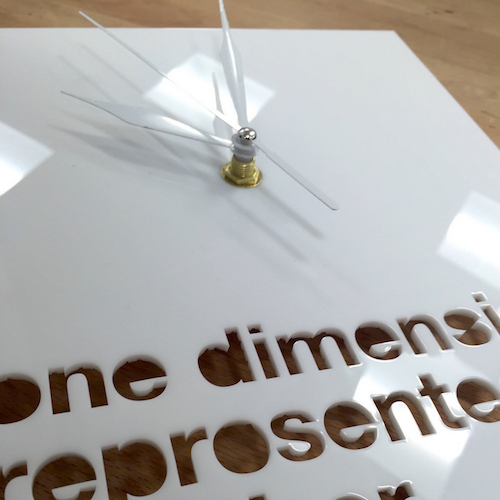
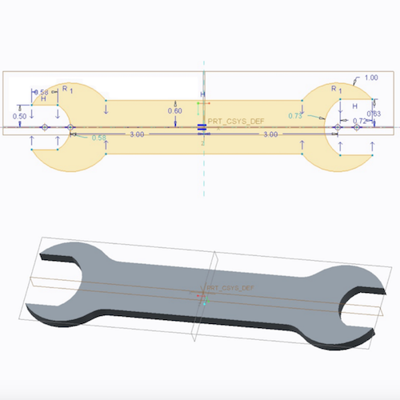

<-Back | Portfolio:

Wool Slipper

Servo Controller

DFM 48 Hour Chair

Summer @ Mattel

Soft Robotic Actuator

Impactathon 2018

Summer Radio Astronomy

CMU Buggy

Sad Bravit Candle

Hybrid Fruit Book

Mechanical Crane Project

Clock & Lamp

Mousetrap Car Challenge

Wrench Fabrication
.